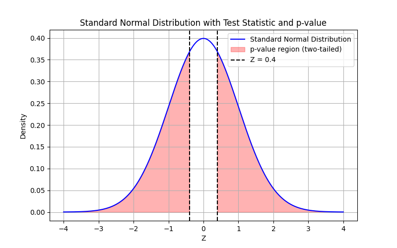

Section 1.10 Inferential Statistics
Inferential statistics is the branch of statistics that enables us to draw conclusions about a population based on data from a sample. Unlike descriptive statistics, which summarize observed data, inferential statistics use probability theory to make generalizations about the population from which the sample is drawn. This is essential in fields such as medicine, economics, and social sciences, where measuring an entire population is often impractical. For example, a survey of 1,000 voters can estimate the preferences of millions. This section focuses on frequentist methods, which rely on hypothesis testing and confidence intervals, but Bayesian methods, which incorporate prior knowledge to compute probabilities of hypotheses, are also used in statistical inference.
The core concepts of inferential statistics include:
-
Population: The entire group of interest.
-
Sample: A subset of the population that is observed.
-
Parameter: A numerical characteristic of the population (e.g., population mean \(\mu\text{,}\) variance \(\sigma^2\)).
-
Statistic: A numerical characteristic computed from the sample (e.g., sample mean \(\bar{x}\text{,}\) sample proportion \(\hat{p}\)).
Subsection 1.10.1 Point Estimation
Point estimation involves using a sample statistic to estimate a population parameter. For example, the sample mean \(\bar{x}\) is used to estimate the population mean \(\mu\text{,}\) and the sample proportion \(\hat{p}\) estimates the population proportion \(p\text{.}\) A good point estimator should be unbiased (its expected value equals the true parameter) and have low variance (it is precise).
For instance, if we measure the heights of 50 randomly selected adults and find a sample mean of \(\bar{x} = 170 \, \text{cm}\text{,}\) we use \(170 \, \text{cm}\) as a point estimate for the population mean height \(\mu\text{.}\) However, point estimates do not convey uncertainty, which is why confidence intervals are often used to provide a range of plausible values.
Subsection 1.10.2 Sampling Distributions
A sampling distribution is the probability distribution of a statistic over repeated samples of the same size from a population. For example, if we repeatedly draw samples of size \(n\) and compute the sample mean \(\bar{x}\text{,}\) the distribution of \(\bar{x}\) values is the sampling distribution of the mean.
The Central Limit Theorem (CLT) states that for large sample sizes, the sampling distribution of the sample mean or proportion is approximately normal, regardless of the population distribution, provided certain conditions are met (e.g., \(np \geq 5\) and \(n(1-p) \geq 5\) for proportions). This property underpins hypothesis testing and confidence intervals, allowing us to use the normal distribution for inference.
Subsection 1.10.3 Hypothesis Testing
Hypothesis testing is a cornerstone of inferential statistics, allowing us to test claims about population parameters using sample data. It involves a structured process to determine whether the data provide sufficient evidence to reject a default claim, called the null hypothesis.
The steps of hypothesis testing are:
-
Null hypothesis (\(H_0\)): The default claim, often stating no effect or no difference (e.g., \(p = 0.5\)).
-
Choose a significance level \(\alpha\) (e.g., 0.05), the probability of rejecting \(H_0\) when it is true.
-
Compute a test statistic from the sample data.
-
Find the p-value or critical region.
-
Decision: Reject \(H_0\) if the p-value is less than \(\alpha\text{;}\) otherwise, fail to reject \(H_0\text{.}\) Failing to reject \(H_0\) does not prove it is true, only that the evidence is insufficient to reject it.
A common misconception is that the p-value represents the probability that the null hypothesis is true. Instead, it is the probability of observing data as extreme as the sample, assuming \(H_0\) is true. A small p-value (e.g., \(p < 0.05\)) suggests strong evidence against \(H_0\text{,}\) but it does not quantify the probability of \(H_0\) or \(H_a\text{.}\)
Worked Example: Coin Toss
Suppose we suspect a coin is biased because it lands on heads more often. To test if it is fair, we define:
\begin{align*}
\amp H_0: p = 0.5 \quad (\text{coin is fair})\\
\amp H_a: p \neq 0.5 \quad (\text{coin is biased})
\end{align*}
where \(p\) is the probability of heads. We toss the coin 100 times and observe 52 heads, so the sample proportion is:
\begin{equation*}
\hat{p} = \frac{52}{100} = 0.52.
\end{equation*}
We set the significance level at \(\alpha = 0.02\) (98% confidence). The Central Limit Theorem applies because \(np_0 = 100 \cdot 0.5 = 50 \geq 5\) and \(n(1-p_0) = 50 \geq 5\text{,}\) ensuring the sample proportion is approximately normal. The standard error under \(H_0\) is:
\begin{equation*}
\sigma_\text{samp} = \sqrt{\frac{p_0(1-p_0)}{n}} = \sqrt{\frac{0.5 \cdot 0.5}{100}} = 0.05.
\end{equation*}
The test statistic is:
\begin{equation*}
Z = \frac{\hat{p} - p_0}{\sigma_\text{samp}} = \frac{0.52 - 0.5}{0.05} = 0.4.
\end{equation*}
For a two-tailed test, the p-value is:
\begin{equation*}
\text{p-value} = 2 \cdot (1 - \Phi(0.4)) \approx 2 \cdot (1 - 0.6554) = 0.6892.
\end{equation*}
Since \(0.6892 > \alpha = 0.02\text{,}\) we fail to reject \(H_0\text{.}\) The significance level \(\alpha\) must be chosen before the experiment to avoid bias (e.g., adjusting \(\alpha\) to 0.7 after seeing the p-value). There is insufficient evidence to conclude the coin is biased, but this does not prove the coin is fair.
Visualization
The following Python code generates a plot of the standard normal distribution with the test statistic \(Z = 0.4\) marked and the two-tailed p-value regions shaded:
import numpy as np
import matplotlib.pyplot as plt
from scipy.stats import norm
# Define the range for the x-axis
x = np.linspace(-4, 4, 1000)
# Standard normal distribution
y = norm.pdf(x, 0, 1)
# Test statistic
z = 0.4
# Create the plot
plt.figure(figsize=(8, 5))
plt.plot(x, y, 'b-', label='Standard Normal Distribution')
# Shade the right tail (z > 0.4)
x_right = np.linspace(z, 4, 100)
plt.fill_between(x_right, norm.pdf(x_right, 0, 1), color='red', alpha=0.3, label='p-value region (two-tailed)')
# Shade the left tail (z < -0.4)
x_left = np.linspace(-4, -z, 100)
plt.fill_between(x_left, norm.pdf(x_left, 0, 1), color='red', alpha=0.3)
# Mark the test statistic
plt.axvline(z, color='black', linestyle='--', label=f'Z = {z}')
plt.axvline(-z, color='black', linestyle='--')
plt.title('Standard Normal Distribution with Test Statistic and p-value')
plt.xlabel('Z')
plt.ylabel('Density')
plt.legend()
plt.grid(True)
plt.show()

The plot in Figure 1.10.1 shows the test statistic \(Z = 0.4\) close to the mean, indicating a large p-value and weak evidence against \(H_0\text{.}\)
Alternatively, we can construct a 98% confidence interval for \(p\) using the standard error of the proportion, \(\sqrt{\frac{\hat{p}(1-\hat{p})}{n}} = \sqrt{\frac{0.52 \cdot 0.48}{100}} \approx 0.05\text{:}\)
\begin{align*}
\text{CI} \amp = \left[ 0.52 \pm 2.326 \cdot 0.05 \right] \approx [0.4037, 0.6363].
\end{align*}
Since \(0.5\) lies within this interval, we fail to reject \(H_0\text{,}\) consistent with the p-value approach.
Real-World Application: Drug Efficacy
In medicine, hypothesis testing is used to evaluate drug efficacy. Suppose a new drug claims to reduce blood pressure by at least 10 mmHg. We test \(H_0: \mu = 0\) (no reduction) versus \(H_a: \mu > 0\) (reduction). Data from 30 patients show a mean reduction of \(\bar{x} = 12 \, \text{mmHg}\) with a sample standard deviation \(s = 15 \, \text{mmHg}\text{.}\) Using a t-test (since \(\sigma\) is unknown and \(n = 30\) is moderate), we compute the t-statistic and p-value to determine if the evidence supports the drug’s efficacy.
Subsection 1.10.4 Confidence Intervals
A confidence interval (CI) estimates a population parameter with a range of values, associated with a confidence level (e.g., 98%). For the coin toss example, the 98% CI for the true proportion \(p\) is \([0.4037, 0.6363]\text{,}\) meaning we are 98% confident that \(p\) lies within this range. The confidence level indicates that if we repeated the sampling process many times, 98% of such intervals would contain the true parameter. It does not mean there is a 98% probability that \(p\) lies in this specific interval.
For a population mean, the CI is:
\begin{equation*}
\left[ \bar{x} \pm z_{\alpha/2} \cdot \frac{\sigma}{\sqrt{n}} \right],
\end{equation*}
where \(\bar{x}\) is the sample mean, \(\sigma\) is the population standard deviation, \(n\) is the sample size, and \(z_{\alpha/2}\) is the critical value (e.g., 2.326 for 98% confidence). If \(\sigma\) is unknown, the sample standard deviation \(s\) is used, and for small samples (\(n < 30\)), a t-distribution is applied instead of the normal distribution.
CIs complement hypothesis testing by providing a range of plausible values for the parameter. For example, in the drug efficacy case, a 95% CI for the mean blood pressure reduction might be \([8, 16] \, \text{mmHg}\text{,}\) suggesting the true effect is likely positive.
Subsection 1.10.5 Types of Errors
Hypothesis testing carries risks of incorrect decisions. A Type I error occurs when we reject \(H_0\) when it is true (false positive), with probability \(\alpha\) (e.g., 0.02 for a 2% chance). A Type II error occurs when we fail to reject \(H_0\) when \(H_a\) is true (false negative), with probability \(\beta\text{.}\) Reducing \(\alpha\) increases \(\beta\) unless the sample size or effect size is increased.
In the coin toss example, a Type I error would be concluding the coin is biased when it is fair. A Type II error would be failing to detect a bias when the coin is biased.
Visualization: Types of Errors
The following table illustrates the possible outcomes of a hypothesis test:
| \(H_0\) True | \(H_0\) False | |
|---|---|---|
| Reject \(H_0\) | Type I Error (\(\alpha\)) | Correct (Power: \(1-\beta\)) |
| Fail to Reject \(H_0\) | Correct (\(1-\alpha\)) | Type II Error (\(\beta\)) |
Subsection 1.10.6 Statistical Power and Effect Size
The power of a test is the probability of correctly rejecting a false null hypothesis (\(1 - \beta\)). Power depends on the sample size, effect size, and significance level \(\alpha\text{.}\) The effect size measures the magnitude of the difference or relationship, such as Cohen’s d for the difference in means or the odds ratio for proportions.
For example, in the drug efficacy example, the effect size might be the mean blood pressure reduction (e.g., 10 mmHg). A larger effect size or sample size increases power, making it easier to detect a true effect. Power analysis determines the sample size needed to achieve a desired power (e.g., 80%) for a given effect size and \(\alpha\text{.}\)
Subsection 1.10.7 Multiple Testing
When conducting multiple hypothesis tests, the probability of at least one Type I error increases. For example, if 20 tests are performed at \(\alpha = 0.05\text{,}\) the chance of at least one false positive is approximately \(1 - (1 - 0.05)^{20} \approx 0.64\text{.}\) Methods like the Bonferroni correction adjust the significance level (e.g., \(\alpha / m\) for \(m\) tests) to control the overall Type I error rate.
For instance, in a study testing 10 drugs, using \(\alpha = 0.005\) per test ensures the overall Type I error rate remains near 0.05. However, this reduces power, so researchers must balance error control and test sensitivity.
Subsection 1.10.8 Common Statistical Tests
Beyond the z-test, other common tests include:
-
t-test: Used for small samples or when the population variance is unknown. For example, to test if a new teaching method improves test scores, we collect scores from 20 students, compute the sample mean difference \(\bar{x} = 5\) points and standard deviation \(s = 10\text{,}\) and use a t-test to compare against \(H_0: \mu = 0\text{.}\)
-
Chi-square test: Used for categorical data. For example, a survey of 200 people tests if political affiliation (Party A, Party B, Independent) is independent of age group (young, middle-aged, older) by comparing observed and expected frequencies.
-
ANOVA: Used to compare means across multiple groups, e.g., testing if different diets affect weight loss.
-
Non-parametric tests: Used when assumptions like normality are violated, such as the Mann-Whitney U test for comparing two groups or the Kruskal-Wallis test for multiple groups.
Each test relies on specific assumptions. For example, z-tests and t-tests assume approximately normal data (or large samples for the CLT) and independent observations. The chi-square test requires expected frequencies of at least 5 per category, and ANOVA assumes homogeneity of variances across groups. Violating these assumptions may necessitate non-parametric tests.